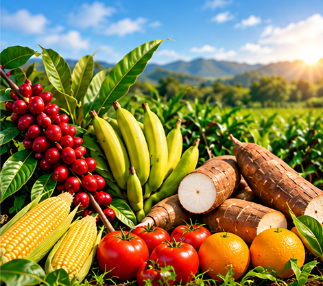
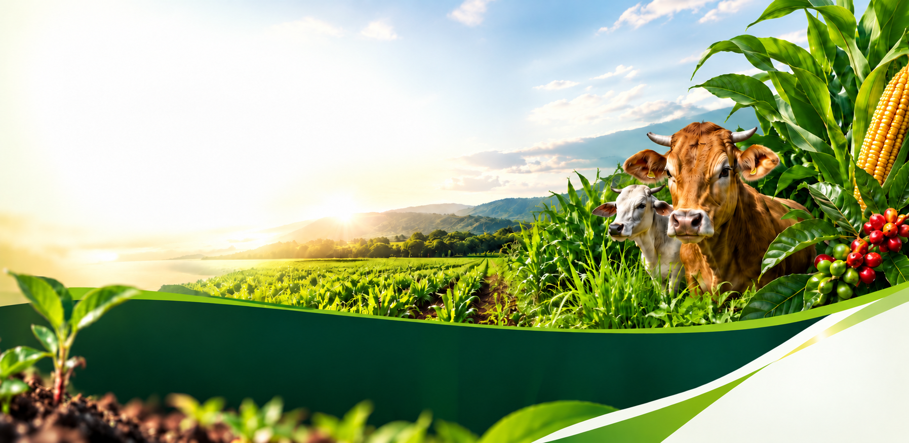
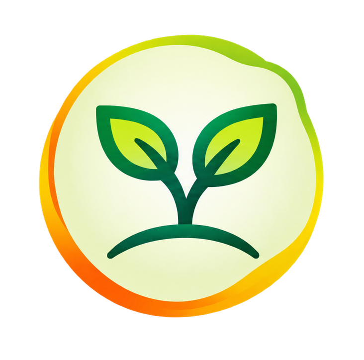
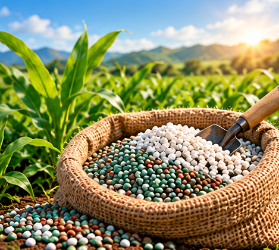
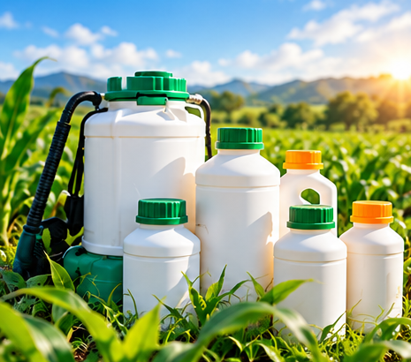
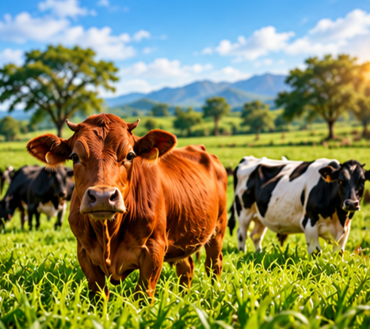
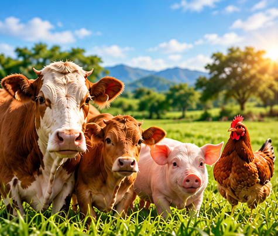
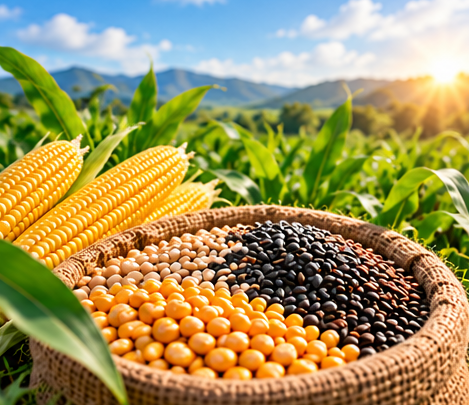
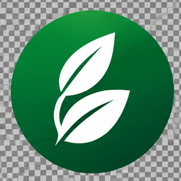

Cultivos
Café, plátano, yuca, maíz, arroz, frutales y más.

Trabajamos para impulsar el desarrollo del campo mediante la comercialización de productos agrícolas de calidad que contribuyen a una agricultura más productiva, sostenible y competitiva

Impulsamos el futuro del campo con insumos y fertilizantes de calidad, que contribuyen al desarrollo agrícola y al bienestar de nuestra región.
Seremos aliados estratégicos del campo y líderes en el mercado regional colombiano, ofreciendo soluciones agricolas de calidad que impulsen el crecimiento sostenible, la competitividad y el desarrollo de nuestra región.
Cálidad, compromiso, servicio, responsabilidad y confianza.
Soluciones para cultivos, potreros y salud animal.

Café, plátano, yuca, maíz, arroz, frutales y más.

Para todos los cultivos: café, plátano, yuca, maíz, arroz, frutales y más.

Herbicidas, insecticidas y fungicidas.

Insumos para establecimiento y mantenimiento de potreros.

Medicamentos veterinarios, vitaminas y suplementos.


Semilla de pasto, maiz y otros cultivos.